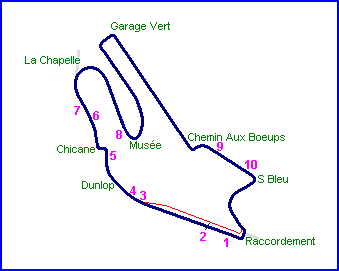
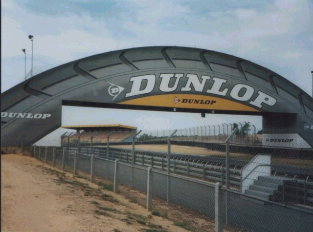
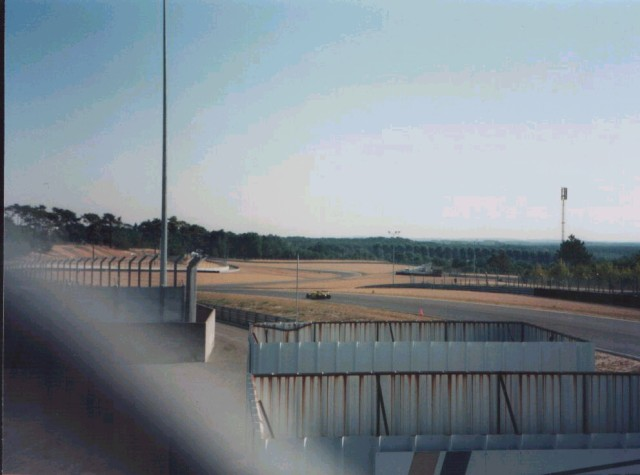
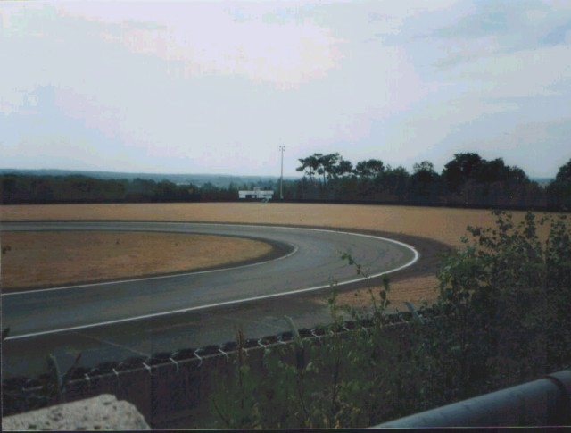
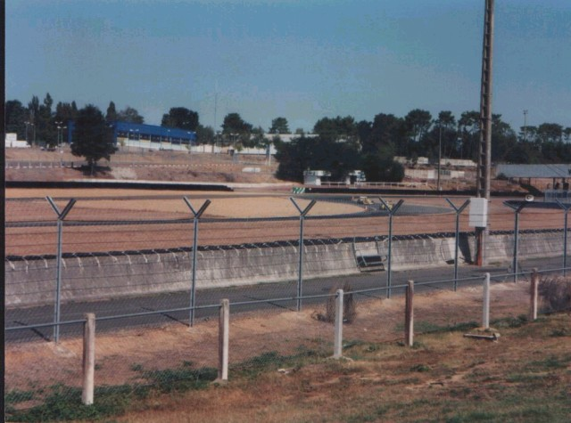
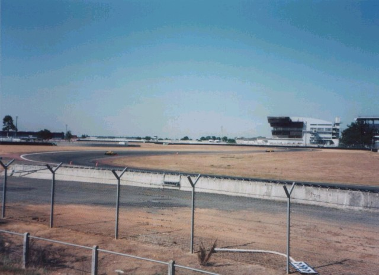

Le Mans Bugatti (Page 2 of 2)
|| Contents | Page 1 - (photos 1-5) | Page 2 - (photos 6-10) || Home ||

Numbers on the map represent the location of where the photos were taken. Click the
hyperlinks above to view the photographs.
Return to racingcircuits.net's Photo Archive Main Index

6) The Dunlop Bridge

7) The Esses (New Section)

8) The second infield hairpin (Garage Vert)

9) Infield Chicane (Chemin aux Boeups)

10) The Last few corners (S Bleu)
©Rob Davies. Reproduced here with kind permission.